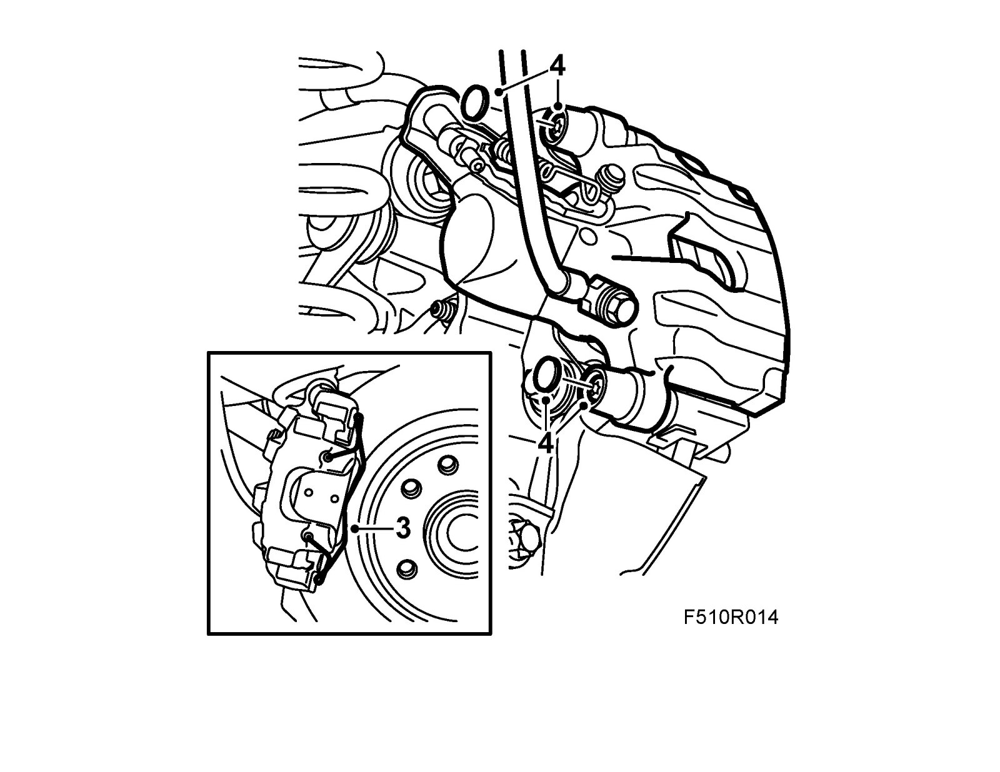
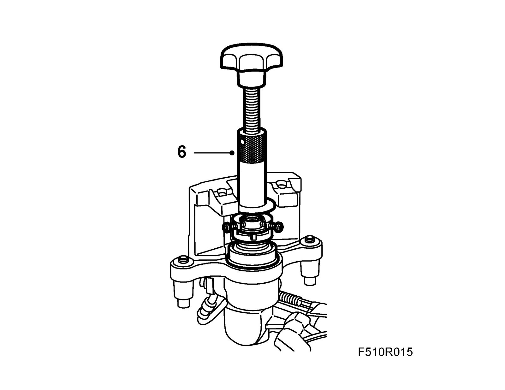
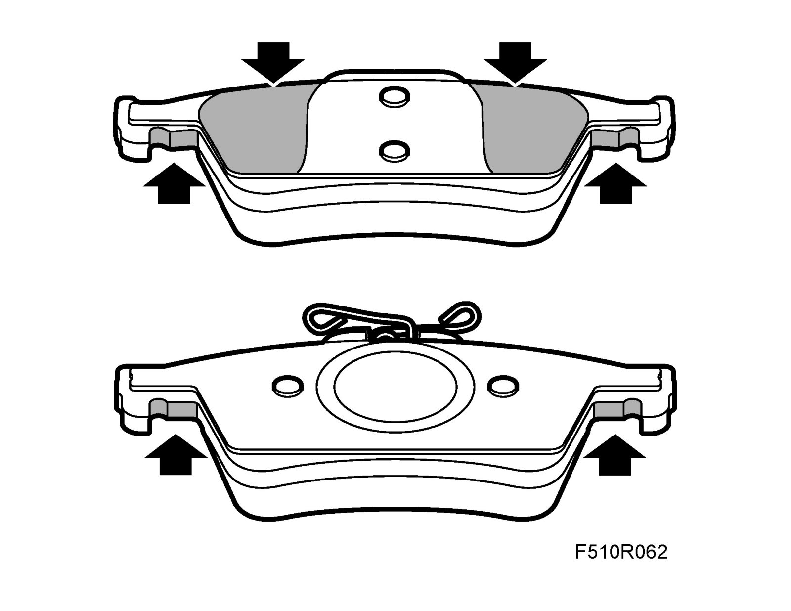
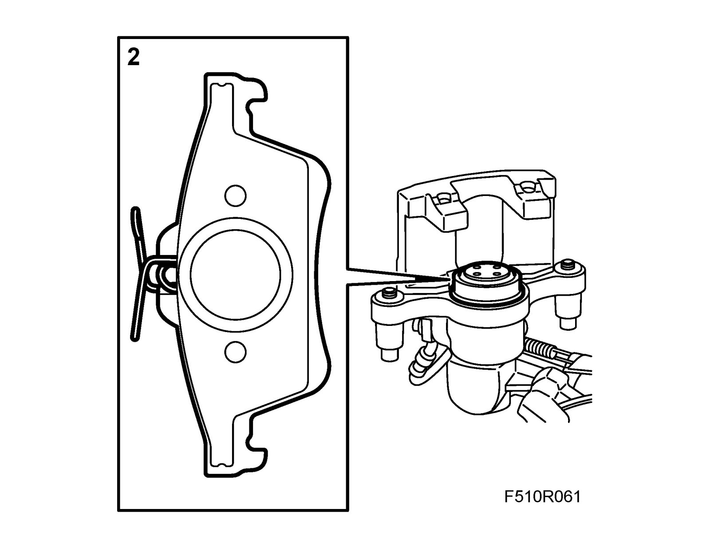
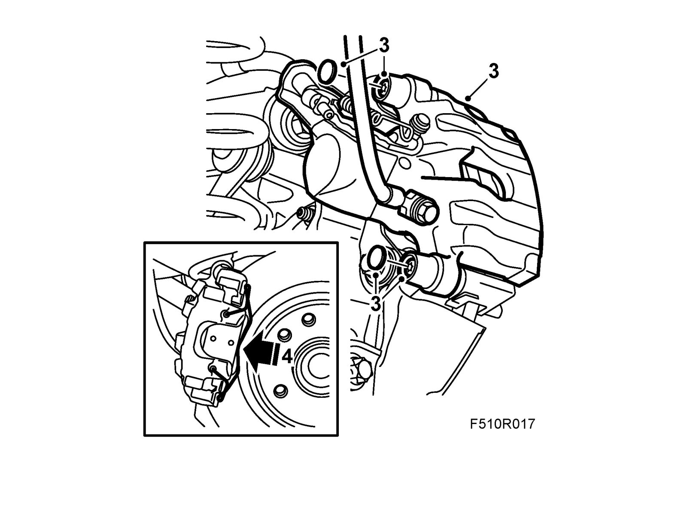

Rear Brake Pads
Rear brake padsTo remove
1. Raise the car.
2. Remove the wheel.
3. Remove the retaining spring from the brake caliper.

4. Remove the protective covers and guide pins.
Lift off the hydraulic body.
5. Remove the inner brake pad from the caliper and the outer brake pad from the bracket.
Clean the inside of the brake caliper and check the dust covers.
6. Screw in the brake piston with 89 96 969 Resetting tool and 89 96 977 Adapter.
Important
Check that the rubber gaiter does not turn when the brake piston is screwed in. Otherwise cracks may appear in the gaiter.

To fit
1. Lubricate the pad sliding and contact surfaces with Special paste.

2. Fit the brake pads.

3. Fit the hydraulic body.
Tightening torque 28 Nm (21 lbf ft)
Fit the protective covers.

4. Fit the retaining spring to the brake caliper.
5. Fit the wheel.
6. Lower the car.
7. Press the brake pedal a few times to press out the brake pistons and the Handbrake adjustment.
8. Check the brake fluid level and top up as necessary.
9. Check the operation of the foot brake and Handbrake.